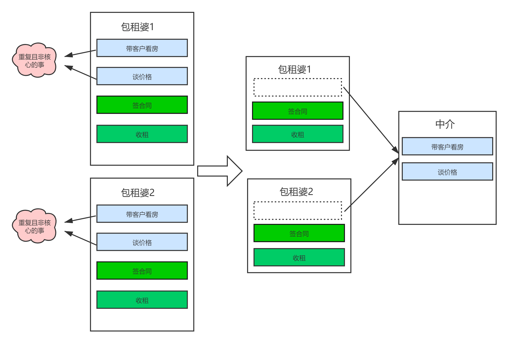

定义
AOP意为面向切面编程，是通过预编译方式和运行期动态代理实现程序功能的统一维护的一种技术，是OOP面向对象编程的一种补足。它是软件开发中的一个热点技术，Spring AOP 也是Spring框架的核心特性之一（另一个核心特性是IOC）
为什么要引入AOP
- 分离功能性需求和非功能性需求
- 集中处理某一关注点
- 侵入性少，增强代码可读性及可维护性
AOP应用场景
权限控制、缓存控制、事务控制、分布式追踪、异常处理等
举个例子，比如一个后台管理系统，每次修改元素信息的时候，都需要校验操作人是否拥有该操作权限，在传统的OOP中，我们需要写一个基类，声明鉴权方法，在子类中调用super.checkPriv();来返回结果。如果Service很多，每个Service都需要继承BaseService,就会导致耦合度过高，代码冗余。
而AOP可以直接通过一个单一的切面类，对需要权限验证的方法统一织入。就好像一个包租婆，她其实关心的只是跟用户签合同和收房租，如果每来一个用户，她都要带着看房、谈价格。对她而言显然是不乐意的。所以中介就出现了，这种重复且非核心的事情，直接交给中介。她就可以专注于签合同和收租。

1 |
|
注册过程
AopAutoConfiguration
AopAutoConfiguration 这个配置类主要是配置aop的代理类型，默认spring.aop.auto=true。看注释的意思，spring.aop.auto=true为true的时候，通过为配置类添加@EnableAspectJAutoProxy，spring默认就会开启AOP功能。springboot2.0之后AOP代理有三种策略：
- jdk动态代理：当spring.aop.proxy-target-class=false, 引入了aspectjweaver依赖时生效
- cglib代理：当spring.aop.proxy-target-class=true, 引入了aspectjweaver依赖时生效
- 基础代理：当spring.aop.proxy-target-class=true, 若没有aspectjweaver依赖时生效，只作用于框架内部的advisors
1
2
3
4
5
6
7
8
9
10
11
12
13
14
15
16
17
18
19
20
21
22
23
24
25
26
27
28
29
30
31
32
33
34
35
36
37
38
39
40
41
42
43
44
45
46
47
48
49
50
51
52/**
* {@link org.springframework.boot.autoconfigure.EnableAutoConfiguration
* Auto-configuration} for Spring's AOP support. Equivalent to enabling
* {@link EnableAspectJAutoProxy @EnableAspectJAutoProxy} in your configuration.
* <p>
* The configuration will not be activated if {@literal spring.aop.auto=false}. The
* {@literal proxyTargetClass} attribute will be {@literal true}, by default, but can be
* overridden by specifying {@literal spring.aop.proxy-target-class=false}.
*
* @author Dave Syer
* @author Josh Long
* @since 1.0.0
* @see EnableAspectJAutoProxy
*/
(proxyBeanMethods = false)
(prefix = "spring.aop", name = "auto", havingValue = "true", matchIfMissing = true)
public class AopAutoConfiguration {
//因为该注解的这个默认值是true，这些都不能省略，我好痛苦
(proxyBeanMethods = false)
(Advice.class)
static class AspectJAutoProxyingConfiguration {
(proxyBeanMethods = false)
(proxyTargetClass = false)
(prefix = "spring.aop", name = "proxy-target-class", havingValue = "false",
matchIfMissing = false)
static class JdkDynamicAutoProxyConfiguration { }
(proxyBeanMethods = false)
(proxyTargetClass = true)
(prefix = "spring.aop", name = "proxy-target-class", havingValue = "true",
matchIfMissing = true)
static class CglibAutoProxyConfiguration { }
}
(proxyBeanMethods = false)
("org.aspectj.weaver.Advice")
(prefix = "spring.aop", name = "proxy-target-class", havingValue = "true",
matchIfMissing = true)
static class ClassProxyingConfiguration {
ClassProxyingConfiguration(BeanFactory beanFactory) {
if (beanFactory instanceof BeanDefinitionRegistry) {
BeanDefinitionRegistry registry = (BeanDefinitionRegistry) beanFactory;
AopConfigUtils.registerAutoProxyCreatorIfNecessary(registry);
AopConfigUtils.forceAutoProxyCreatorToUseClassProxying(registry);
}
}
}
}
@EnableAspectJAutoProxy
从代码可以看出 @EnableAspectJAutoProxy 引入了 AspectJAutoProxyRegister.class 对象 ，AspectJAutoProxyRegister 给容器中注册一个 AnnotationAwareAspectJAutoProxyCreator：
1 | (ElementType.TYPE) |
AspectJAutoProxyRegistrar
这个类的作用注释写的也很明白， 基于@EnableAspectJAutoProxy注解的情况下，对当前的BeanDefinitionRegistry注册一个AnnotationAwareAspectJAutoProxyCreator。1
2
3
4
5
6
7
8
9
10/**
* Registers an org.springframework.aop.aspectj.annotation.AnnotationAwareAspectJAutoProxyCreator
* AnnotationAwareAspectJAutoProxyCreator against the current BeanDefinitionRegistry
* as appropriate based on a given @EnableAspectJAutoProxy annotation.
*/
class AspectJAutoProxyRegistrar implements ImportBeanDefinitionRegistrar {
AopConfigUtils.registerAspectJAnnotationAutoProxyCreatorIfNecessary(registry);
//下面的代码是判断是否采用CGlib和通过AOP暴露该代理对象的代码
//全省略
}
直接接着看AopConfigUtils, registerAspectJAnnotationAutoProxyCreatorIfNecessary 这个方法，这个方法最后调用到了registerOrEscalateApcAsRequired。
1 |
|
AnnotationAwareAspectJAutoProxyCreator对目标对象进行代理对象的创建，创建代理对象过程中，会先创建一个代理工厂，获取到所有的增强器（通知方法），将这些增强器和目标类注入代理工厂，再用代理工厂创建对象；
代理对象执行目标方法，得到目标方法的拦截器链，利用拦截器的链式机制，依次进入每一个拦截器进行执行。

...
...